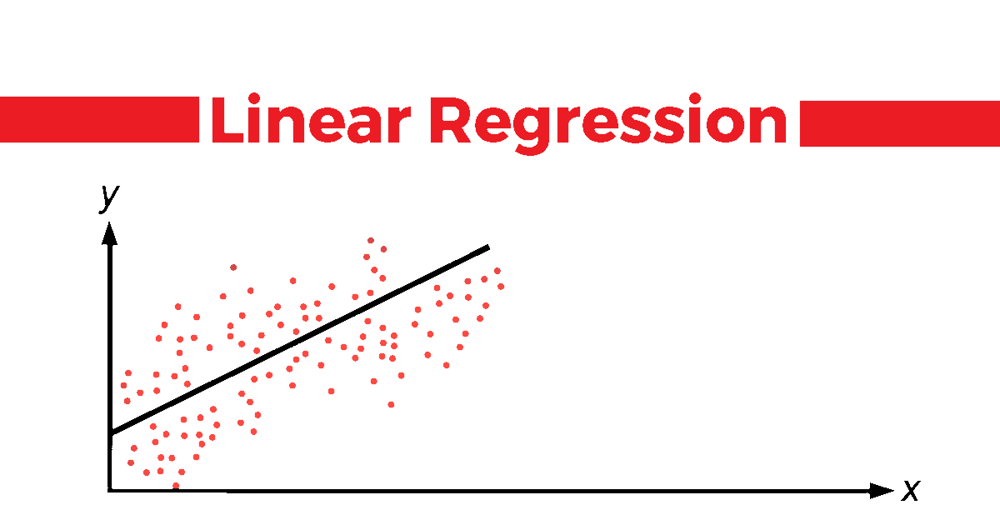

import tensorflow as tf
from sklearn.datasets import load_diabetes
from sklearn.model_selection import train_test_split
from sklearn.linear_model import LinearRegression
from sklearn.metrics import mean_squared_error
import numpy as npThis article primarly discusses on implementation of simple linear regression in both sklearn and tensorflow.


We will consider a toy dataset of diabetes, described below, to perform both linear regression using OLS and shallow neural networks, and learn from both approaches.
data = load_diabetes()
print(data['DESCR']).. _diabetes_dataset:
Diabetes dataset
----------------
Ten baseline variables, age, sex, body mass index, average blood
pressure, and six blood serum measurements were obtained for each of n =
442 diabetes patients, as well as the response of interest, a
quantitative measure of disease progression one year after baseline.
**Data Set Characteristics:**
:Number of Instances: 442
:Number of Attributes: First 10 columns are numeric predictive values
:Target: Column 11 is a quantitative measure of disease progression one year after baseline
:Attribute Information:
- age age in years
- sex
- bmi body mass index
- bp average blood pressure
- s1 tc, total serum cholesterol
- s2 ldl, low-density lipoproteins
- s3 hdl, high-density lipoproteins
- s4 tch, total cholesterol / HDL
- s5 ltg, possibly log of serum triglycerides level
- s6 glu, blood sugar level
Note: Each of these 10 feature variables have been mean centered and scaled by the standard deviation times the square root of `n_samples` (i.e. the sum of squares of each column totals 1).
Source URL:
https://www4.stat.ncsu.edu/~boos/var.select/diabetes.html
For more information see:
Bradley Efron, Trevor Hastie, Iain Johnstone and Robert Tibshirani (2004) "Least Angle Regression," Annals of Statistics (with discussion), 407-499.
(https://web.stanford.edu/~hastie/Papers/LARS/LeastAngle_2002.pdf)
print("Number of Independent features: ", data['data'].shape[1])
print("Number of Training Instances: ", data['target'].shape[0])Number of Independent features: 10
Number of Training Instances: 442Let us divide the entire dataset into train and test set
X= data['data']
y = data['target']
X_train, X_test, y_train, y_test = train_test_split(X, y, test_size=0.2, random_state=42)Linear Regression Sci-kit Learn
model = LinearRegression()
model.fit(X_train,y_train)
y_pred = model.predict(X_test)
mse = mean_squared_error(y_test, y_pred)
print("Mean Squared Error:", mse)Mean Squared Error: 2900.193628493482print("Model Coefficients: \n", model.coef_)Model Coefficients:
[ 37.90402135 -241.96436231 542.42875852 347.70384391 -931.48884588
518.06227698 163.41998299 275.31790158 736.1988589 48.67065743]print("Model Intercept: \n", model.intercept_)Model Intercept:
151.34560453985995Shallow Neural Network - Linear Regression
We can view the shallow neural network for linear regression in below way

y_reshaped = y.reshape(-1, 1)
# Concatenate y as an additional column to X
X_with_y = np.concatenate((X, y_reshaped), axis=1)
# Compute the correlation matrix
correlation_matrix = np.corrcoef(X_with_y, rowvar=False)print(np.round(correlation_matrix,1))[[ 1. 0.2 0.2 0.3 0.3 0.2 -0.1 0.2 0.3 0.3 0.2]
[ 0.2 1. 0.1 0.2 0. 0.1 -0.4 0.3 0.1 0.2 0. ]
[ 0.2 0.1 1. 0.4 0.2 0.3 -0.4 0.4 0.4 0.4 0.6]
[ 0.3 0.2 0.4 1. 0.2 0.2 -0.2 0.3 0.4 0.4 0.4]
[ 0.3 0. 0.2 0.2 1. 0.9 0.1 0.5 0.5 0.3 0.2]
[ 0.2 0.1 0.3 0.2 0.9 1. -0.2 0.7 0.3 0.3 0.2]
[-0.1 -0.4 -0.4 -0.2 0.1 -0.2 1. -0.7 -0.4 -0.3 -0.4]
[ 0.2 0.3 0.4 0.3 0.5 0.7 -0.7 1. 0.6 0.4 0.4]
[ 0.3 0.1 0.4 0.4 0.5 0.3 -0.4 0.6 1. 0.5 0.6]
[ 0.3 0.2 0.4 0.4 0.3 0.3 -0.3 0.4 0.5 1. 0.4]
[ 0.2 0. 0.6 0.4 0.2 0.2 -0.4 0.4 0.6 0.4 1. ]]I’m using the above correlation matrix as weight initializer to check whether the weights will be in similar way to that of the regular OLS.
no_of_features = X.shape[1]
initializer_weights = tf.keras.initializers.Constant(value= [0.2,0.2,0.3,0.3,0.2,-0.1,0.2,0.3,0.3,0.2])
initializer_bias = tf.keras.initializers.Constant(value = [1.0])
model_tf = tf.keras.Sequential([
tf.keras.layers.Dense(units=1,
activation="linear",
input_shape=(no_of_features,),
kernel_initializer = initializer_weights,
bias_initializer = initializer_bias)
])
model_tf.compile(optimizer='sgd', loss='mean_squared_error',metrics=['mse'])
model_tf.fit(X_train, y_train, epochs=1500, verbose=0)
y_pred_test = model_tf.predict(X_test)3/3 [==============================] - 0s 4ms/stepmodel_tf.summary()Model: "sequential_4"
_________________________________________________________________
Layer (type) Output Shape Param #
=================================================================
dense_7 (Dense) (None, 1) 11
=================================================================
Total params: 11 (44.00 Byte)
Trainable params: 11 (44.00 Byte)
Non-trainable params: 0 (0.00 Byte)
_________________________________________________________________As we can see above there is just one layer connecting the paramters;
11 Paramters are 10 weight paramters and 1 bias parameter that needs to be learned by the neural network
mse_tf = mean_squared_error(y_test, y_pred_test.flatten())
print("Mean Squared Error:", mse_tf)Mean Squared Error: 2925.001255544474weights, bias = model_tf.layers[0].get_weights()
print("Weights:")
print(weights)
print("Bias:")
print(bias)Weights:
[[ 5.9075676e+01]
[-9.0772835e+01]
[ 3.6696533e+02]
[ 2.5461090e+02]
[ 9.4142288e-02]
[-3.7435982e+01]
[-1.8325632e+02]
[ 1.4889064e+02]
[ 2.8909210e+02]
[ 1.5162097e+02]]
Bias:
[153.55777]Comparision of Parameters
import pandas as pdpd.concat(
[pd.DataFrame(model.coef_, columns=["Model Coefficients of OLS"]),
pd.DataFrame(weights,columns=["Model Coefficients of NN"])],
axis = 1
)| Model Coefficients of OLS | Model Coefficients of NN | |
|---|---|---|
| 0 | 37.904021 | 59.075676 |
| 1 | -241.964362 | -90.772835 |
| 2 | 542.428759 | 366.965332 |
| 3 | 347.703844 | 254.610901 |
| 4 | -931.488846 | 0.094142 |
| 5 | 518.062277 | -37.435982 |
| 6 | 163.419983 | -183.256317 |
| 7 | 275.317902 | 148.890640 |
| 8 | 736.198859 | 289.092102 |
| 9 | 48.670657 | 151.620972 |
At this juncture, it’s evident that the weights in neural networks are derived through iterative optimization methods, notably gradient descent, optimizing model performance. Conversely, OLS regression employs statistical techniques to determine model coefficients. Consequently, the fundamental nature of these weights differs significantly.
At present, it’s feasible to manually interpret the coefficients derived from OLS regression, aiding in understanding the relationships between variables.
However, this interpretability is not readily achievable with neural networks, underscoring their characterization as black box models primarily designed for prediction rather than inference.
It seems there is ongoing research seeks to enhance interpretability in neural networks which i’m not yet aware at this point of time.